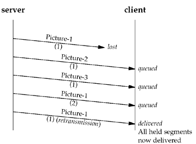
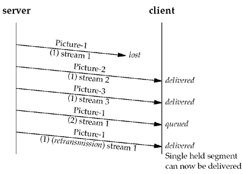
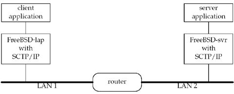

| [ Team LiB ] |
|
10.5 Exploring Head-of-Line BlockingOur simple server provides a method to send text messages to any of a number of streams. A stream in SCTP is not a stream of bytes (as in TCP), but a sequence of messages that is ordered within the association. These sub-ordered streams are used to avoid the head-of-line blocking found in TCP. Head-of-line blocking occurs when a TCP segment is lost and a subsequent TCP segment arrives out of order. That subsequent segment is held until the first TCP segment is retransmitted and arrives at the receiver. Delaying delivery of the subsequent segment assures that the receiving application sees all data in the order in which the sending application sent it. This delay to achieve complete ordering is quite useful, but it has a downside. Assume that semantically independent messages are being sent over a single TCP connection. For example, a server may send three different pictures for a Web browser to display. To make the pictures appear on the user's screen in parallel, a server sends a piece from the first picture, then a piece from the second picture, and finally a piece from the third picture. The server repeats this process until all three pictures are successfully transmitted to the browser. But what happens if a TCP packet holding a piece of the first picture is lost? The client will hold all data until that missing piece is retransmitted and arrives successfully, delaying all data for the second and third pictures, as well as data for the first picture. Figure 10.5 illustrates this problem. Figure 10.5. Sending three pictures over one TCP connection.
This blocking is not really what the application would like to occur. Ideally, only later pieces of the first picture would be delayed while pieces of the second and third pictures that arrive in order would be delivered immediately to the user. Head-of-line blocking can be minimized by SCTP's multistream feature. In Figure 10.6, we see the same three pictures being sent. This time, the server uses streams so that head-of-line blocking only occurs where it is desired, allowing delivery of the second and third pictures but holding the partially received first picture until in-order delivery is possible. Figure 10.6. Sending three pictures over three SCTP streams. We now complete our client code, including the missing function sctpstr_cli_echoall (Figure 10.7, p. 296), which we will use to demonstrate how SCTP minimizes head-of-line blocking. This function is similar to our previous sctpstr_cli function except the client no longer expects a stream number in brackets preceding each message. Instead, the function sends the user message to all SERV_MAX_SCTP_STRM streams. After sending the messages, the client waits for all the responses to arrive from the server. In running the code, we also pass an additional argument to the server so that the server responds on the same stream on which a message was received. This way, the user can better track the responses sent and their order of arrival. Initialize data structures and wait for input13–15 As before, the client initializes the sri structure used to set up the stream it will be sending and receiving from. In addition, the client zeros out the data buffer from which it will collect user input. Then, the client enters the main loop, once again blocking on user input. Pre-process message16–20 The client sets up the message size and then deletes the newline character that is at the end of the buffer (if any). Send message to each stream21–26 The client sends the message using the sctp_sendmsg function, sending the whole buffer of SCTP_MAXLINE bytes. Before sending the message, it appends the string ".msg." and the stream number so that we can observe the order of the arriving messages. In this way, we can compare the arrival order to the order in which the client sent the actual messages. Note also the client sends the messages to a set number of streams without regard to how many were actually set up. It is possible that one or more of the sends may fail if the peer negotiates the number of streams downward.
Figure 10.7 sctp_strcliecho.sctp/sctp_strcliecho.c
1 #include "unp . h"
2 #define SCTP_MAXLINE 800
3 void
4 sctpstr_cli_echoall (FILE *fp, int sock_fd, struct sockaddr *to,
5 socklen_t tolen)
6 {
7 struct sockaddr_in peeraddr;
8 struct sctp_sndrcvinfo sri;
9 char sendline [SCTP_MAXLINE], recvline [SCTP_MAXLINE];
10 socklen_t len;
11 int rd_sz, i, strsz;
12 int msg_flags;
13 bzero(sendline, sizeof (sendline));
14 bzero(&sri, sizeof (sri));
15 while (fgets (sendline, SCTP_MAXLINE - 9, fp) ! = NULL) {
16 strsz = strlen (sendline);
17 if (sendline [strsz - 1] == '\n') {
18 sendline [strsz - 1] = '\0';
19 strsz--;
20 }
21 for (i = 0; i < SERV_MAX_SCTP_STRM; i++) {
22 snprintf (sendline + strsz, sizeof (sendline) - strsz,
23 ".msg. %d", i) ;
24 Sctp_sendmsg (sock_fd, sendline, sizeof (sendline),
25 to, tolen, 0, 0, i, 0, 0) ;
26 }
27 for (i = 0; i < SERV_MAX_SCTP_STRM; i++) {
28 len = sizeof (peeraddr) ;
29 rd_sz = Sctp_recvmsg (sock_fd, recvline, sizeof (recvline),
30 (SA *) &peeraddr, &len, &sri, &msg_flags);
31 printf ("From str:%d seq:%d (assoc: 0X%X) :",
32 sri . sinfo_stream, sri . sinfo_ssn,
33 (u_int) sri . sinfo_assoc_id) ;
34 printf ("%.*s\n", rd_sz, recvline) ;
35 }
36 }
37 }
Read back echoed messages and display27–35 We now block, reading all the response messages from our server and displaying each as we did before. After the last message is read, the client loops back for more user input. Running the CodeWe execute the client and server on two separate FreeBSD machines, separated by a configurable router, as illustrated in Figure 10.8. The router can be configured to insert both delay and loss. We execute the program first with no loss inserted by the router. Figure 10.8. SCTP client/server lab. We start the server with an additional argument of "0", forcing the server to not increment the stream number on its replies. Next, we start the client, passing it the address of the echo server and an additional argument so that it will send a message to each stream. freebsd4% sctpclient01 10.1.4.1 echo Echoing messages to all streams Hello From str:0 seq:0 (assoc:0xc99e15a0):Hello.msg.0 From str:1 seq:0 (assoc:0xc99e15a0):Hello.msg.1 From str:2 seq:1 (assoc:0xc99e15a0):Hello.msg.2 From str:3 seq:0 (assoc:0xc99e15a0):Hello.msg.3 From str:4 seq:0 (assoc:0xc99e15a0):Hello.msg.4 From str:5 seq:0 (assoc:0xc99e15a0):Hello.msg.5 From str:6 seq:0 (assoc:0xc99e15a0):Hello.msg.6 From str:7 seq:0 (assoc:0xc99e15a0):Hello.msg.7 From str:8 seq:0 (assoc:0xc99e15a0):Hello.msg.8 From str:9 seq:0 (assoc:0xc99e15a0):Hello.msg.9 ^D freebsd4% With no loss, the client sees the responses arrive back in the order in which the client sent them. We now change the parameters of our router to lose 10% of all packets traveling in both directions and restart our client. freebsd4% sctpclient01 10.1.4.1 echo Echoing messages to all streams Hello From str:0 seq:0 (assoc:0xc99e15a0):Hello.msg.0 From str:2 seq:0 (assoc:0xc99e15a0):Hello.msg.2 From str:3 seq:0 (assoc:0xc99e15a0):Hello.msg.3 From str:5 seq:0 (assoc:0xc99e15a0):Hello.msg.5 From str:1 seq:0 (assoc:0xc99e15a0):Hello.msg.1 From str:8 seq:0 (assoc:0xc99e15a0):Hello.msg.8 From str:4 seq:0 (assoc:0xc99e15a0):Hello.msg.4 From str:7 seq:0 (assoc:0xc99e15a0):Hello.msg.7 From str:9 seq:0 (assoc:0xc99e15a0):Hello.msg.9 From str:6 seq:0 (assoc:0xc99e15a0):Hello.msg.6 ^D freebsd4% We can verify that the messages within a stream are properly being held for reordering by having the client send two messages to each stream. We also modify the client to add a suffix to its message number to help us identify each message duplicate. The modifications to the server are shown in Figure 10.9. Figure 10.9 sctp_strcliecho modifications.sctp/sctp_strcliecho2.c
21 for (i = 0; i < SERV_MAX_SCTP_STRM; i++) {
22 snprintf (sendline + strsz, sizeof (sendline) - strsz,
23 ".msg.%d 1", i);
24 Sctp_sendmsg (sock_fd, sendline, sizeof (sendline),
25 to, tolen, 0, 0, i, 0, 0);
26 snprintf (sendline + strsz, sizeof (sendline) - strsz,
27 ".msg.%d 2", i);
28 Sctp_sendmsg (sock_fd, sendline, sizeof (sendline),
29 to, tolen, 0, 0, i, 0, 0);
30 }
31 for (i = 0; i < SERV_MAX_SCTP_STRM * 2; i++) {
32 len = sizeof (peeraddr);
Add additional message number and send22–25 The client adds an additional message number, "1", to help us track which message is being sent. Then the client sends the message using the sctp_sendmsg function. Change message number and send it again26–29 The client now changes the number from "1" to "2" and sends this updated message to the same stream. Read messages and display31 Here the code requires only one small change: We double the number of messages the client expects to receive back from the echo server. Running the Modified CodeWe start our server and modified client, as before, and obtain the following output from the client: freebsd4% sctpclient01 10.1.4.1 echo Echoing messages to all streams Hello From str:0 seq:0 (assoc:0xc99e15a0):Hello.msg.0 1 From str:0 seq:1 (assoc:0xc99e15a0):Hello.msg.0 2 From str:1 seq:0 (assoc:0xc99e15a0):Hello.msg.1 1 From str:4 seq:0 (assoc:0xc99e15a0):Hello.msg.4 1 From str:5 seq:0 (assoc:0xc99e15a0):Hello.msg.5 1 From str:7 seq:0 (assoc:0xc99e15a0):Hello.msg.7 1 From str:8 seq:0 (assoc:0xc99e15a0):Hello.msg.8 1 From str:9 seq:0 (assoc:0xc99e15a0):Hello.msg.9 1 From str:3 seq:0 (assoc:0xc99e15a0):Hello.msg.3 1 From str:3 seq:1 (assoc:0xc99e15a0):Hello.msg.3 2 From str:1 seq:1 (assoc:0xc99e15a0):Hello.msg.1 2 From str:5 seq:1 (assoc:0xc99e15a0):Hello.msg.5 2 From str:2 seq:0 (assoc:0xc99e15a0):Hello.msg.2 1 From str:6 seq:0 (assoc:0xc99e15a0):Hello.msg.6 1 From str:6 seq:1 (assoc:0xc99e15a0):Hello.msg.6 2 From str:2 seq:1 (assoc:0xc99e15a0):Hello.msg.2 2 From str:7 seq:1 (assoc:0xc99e15a0):Hello.msg.7 2 From str:8 seq:1 (assoc:0xc99e15a0):Hello.msg.8 2 From str:9 seq:1 (assoc:0xc99e15a0):Hello.msg.9 2 From str:4 seq:1 (assoc:0xc99e15a0):Hello.msg.4 2 ^D freebsd4% As we can see from the output, messages are lost, and yet only the messages in a particular stream are delayed. The other streams do not have their data delayed. SCTP streams can be a powerful mechanism to escape head-of-line blocking yet preserve order within a set of related messages. |
| [ Team LiB ] |
|